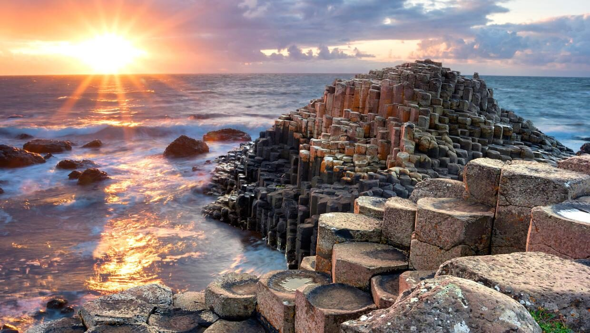
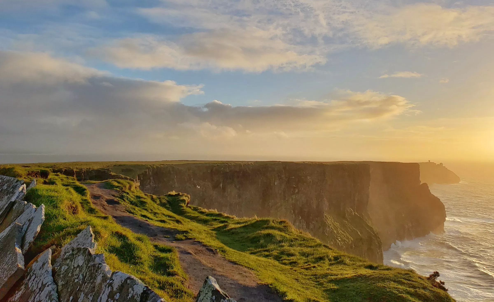

Lugar que eu gostaria de conhecer...
Irlanda
Sobre mim
Sou o Artur de Oliveira! Eu gosto de instrumenos musicais, jogos digitais, programação e das pequenas coisas na vida :]
Sobre a Irlanda
A Irlanda é um país que se localiza no noroeste europeu, na Ilha da Irlanda, dividida por ela, e a Irlanda do Norte. É um país predominantemente frio, com varias planices, e uma gama de paisagens surpreendentes!


A irlanda por si só, pode não ter grandes atrações turísticas, ou pontos conhecidos... Mas uma grande parte de minha família mora lá! E esse é outro motivo do por que eu gostaria de visita-la!
Meu irmão mais velho, por instância, já mora lá! E ele comenta sobre qualidade de vida, e os esportes que pratica.
Mas não é só por isso... Por ficar na Europa, o acesso a outros países é facil! Permitindo me aproveitar muito mais :D